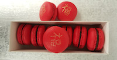

- Where to find Chinese New Year treats in Vancouver (Vancity Buzz 2016)
"Specializing in handmade French macarons, Gourmand Macaron will be celebrating the Lunar Monkey Year with a range of specially-made Chinese New Year-inspired macarons. These dainty red macarons will be adorned with golden hand written Chinese characters, meaning “good luck” or 'fortune.'"...
- Vancity Buzz
"The last dessert vendor I visited, was Che Baba Cantina. They are famous for their in house macarons and I was so excited to get some. Their boxes of macarons was definitely eye catching. These macarons are created by Gourmand Macaron’s Paulin Calot." - Whitney Hong
- Vancouver Sun
"One of the dessert highlights are the macarons, made by Gourmand Macaron’s Paulin Calot. He’s got it down." - Mia Stainsby
- Vanfoodies
"When I got there, what caught my eyes was definitely the macaron showcase. Macarons are way more colourful than chocolate bonbons. Then, after finding out every flavour that was available, I ordered myself 6 different flavours of macarons. All nicely, carefully packed in a little plastic bag. Macarons are very delicate, so really, you have to handle them with care."